Part A
The Scree Plot Obtained is as follows.
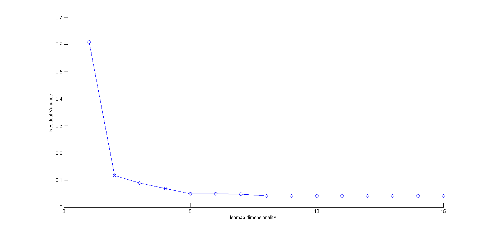
Explanation for Dimension Since the residual error does not fall significantly for dimensions above 2, we can say that the higher dimensions are not significant and thus dimensionality of the data is 2.
Source File in Code: A_B_C_D.m , Isomap_a_b_c_d
Part B
2-D Embeddings plot is as below
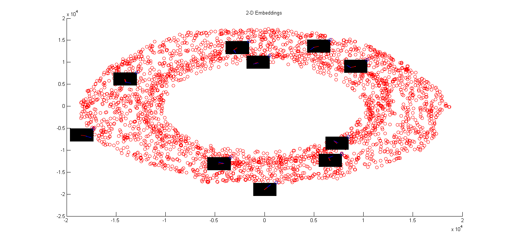
Source File in Code: A_B_C_D.m , Isomap_a_b_c_d
Part C
Variation of Theta1
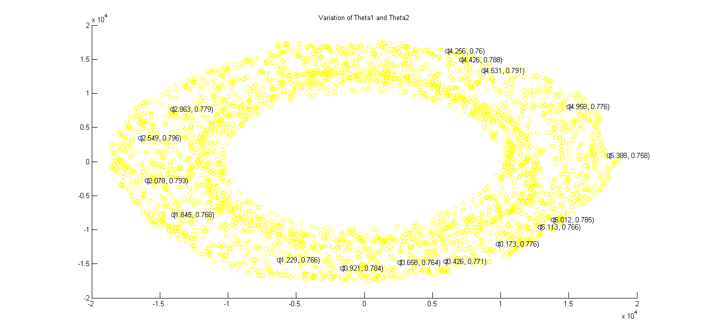
Here Theta2 values are almost constant and Theta1 varies as we move along the circumference of the torus.
Variation of Theta2
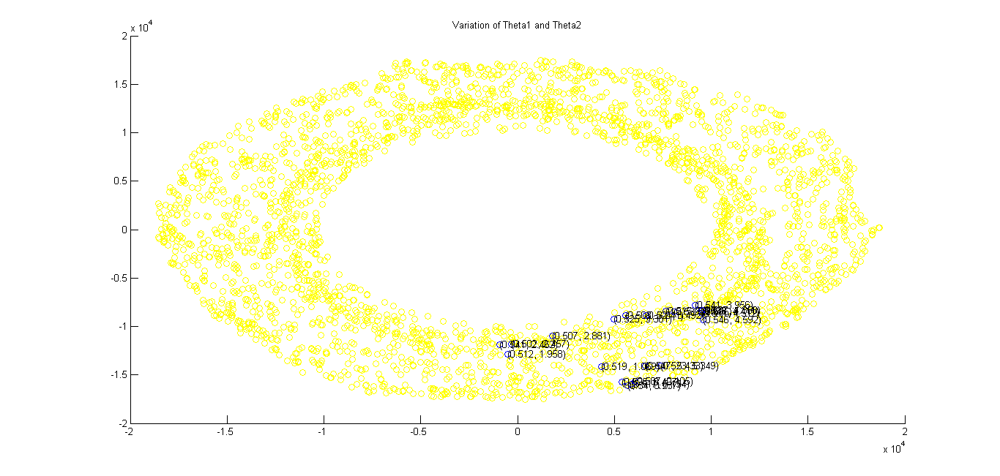
A highly magnified image of this is as below.
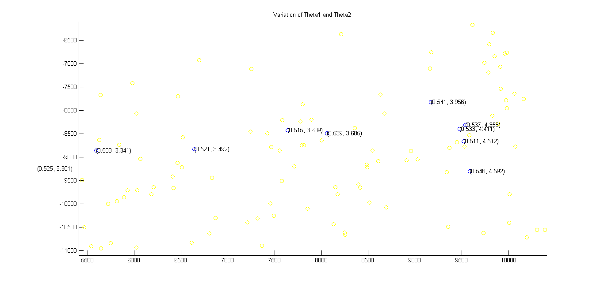
Here Theta1 values are almost constant and Theta2 varies as we move along the radial direction.
Theta1 (base angle) varies along the circumference of the torus and Theta2 varies along the radius of torus.
This is what we expect of a robotic arm with two revolute joints. Thus we can say that the manifold captures the topology of robot's motion space.
Source File in Code: A_B_C_D.m , Isomap_a_b_c_d
Part D
The observed maninfold is torus.Following are some of the views of the 3-D Embedding of the data.
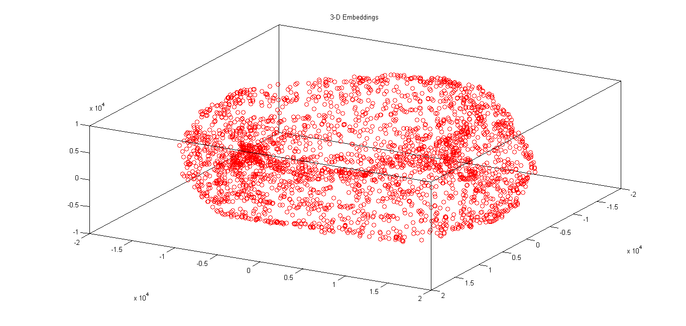
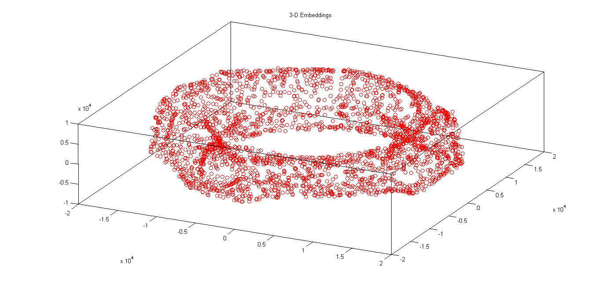
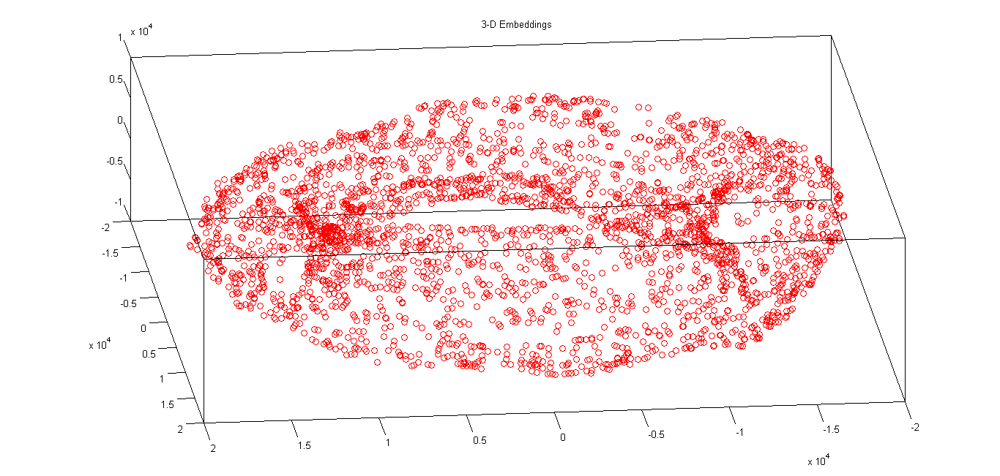
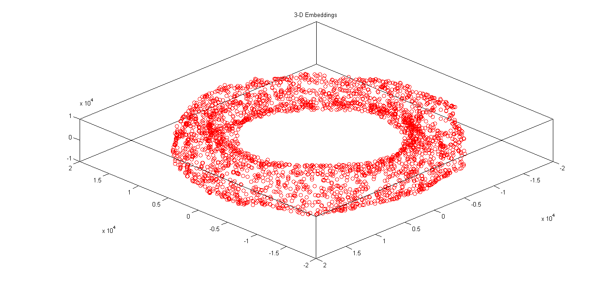
Source File in Code: A_B_C_D.m , Isomap_a_b_c_d
Part E
Neural Fitting Tool was with 70% training, 15% validation and 15% test data was used against the given dataset for making the following comparisons.
The convergence is faster when training is from embeddings to sines-cosines. Certainly these are the intrinsic parameters of the data and these will be learnt faster by the learning algoithm. The images on the other hand contain large number (30K values corresponding to each image,when each image is resized as [100 100]) of features that are not actually useful and which are needed to be filtered out.
Following are the performance curves of the training of the given data set.
For 2-D embeddings to sines-cosines
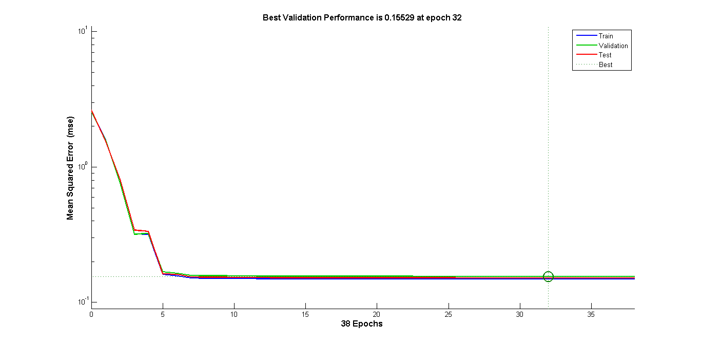
For images to sines-cosines
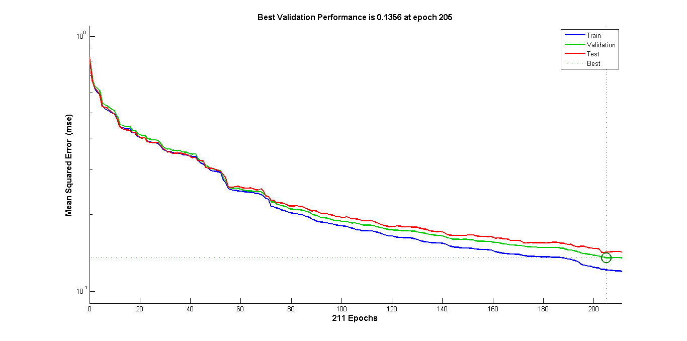
Source File in Code: E.m , Isomap_f. For the neural network part, built-in tools from Matlab were used.
Part F
Images in which the bot touched the obstacle were found as follows:
- Found the pixels which corresponded to the obstacle. This was done by detecting pixels with (r,g,b) values as (0,255,0)
- For every image if the above found pixels were not black, bot in the image was considered intersecting with the obstacle.
Further, the above plot was obtained by only plotting non intersecting images.
Edges corresponding to intersecting images were given very large (practically infinite) weights to remove them from the path calculations. The shortest path was then calculated.
The path is depicted by blue coloured edges.
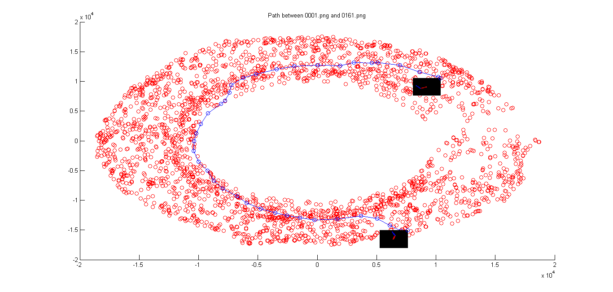
Source File in Code: F.m , Isomap_f
Part G
Process similar to part F with second obstacle image was carried out to obtain the following plot.
But there are not many nodes affected by the obstacle this time. The path that is discovered is not much altered. In Part F the positon of object was such that the robot had to go from the opposite but it is not the case this time, so the bot manages to avoid the obstacle without following a longer path. So even when the initial and final configuration of bot is same in both cases, the position of obstacle alters the path by great deal.
NOTE: Since the number of points that are removed are too less, i have shown them in black rather than not showing them in plot.
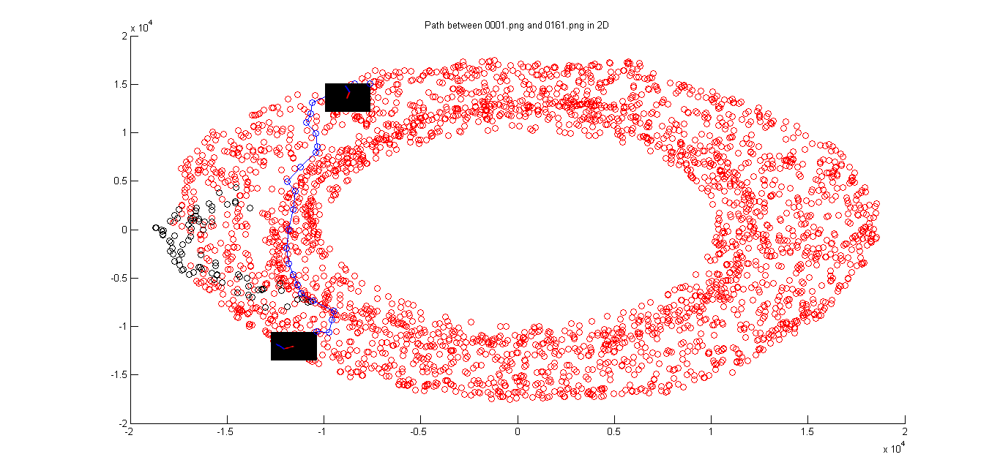
Above path shown in 3-D Embedding in two different views
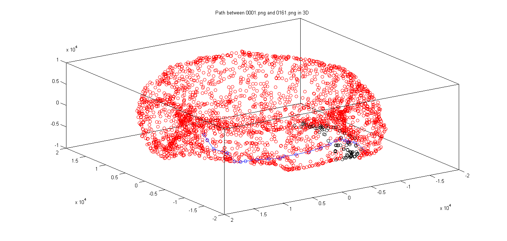
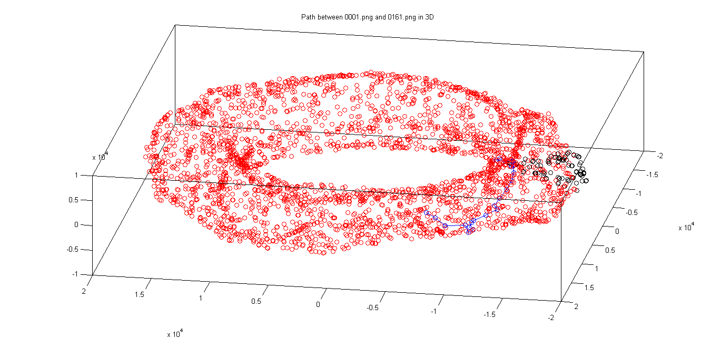
Source File in Code: G.m , Isomap_g
Source Code
This is the link to the source code.
Acknowledgement
I have used the Isomap Code made available at
this page.
Code for loading the images was taken from resources of previous offering of this course made available at
this page.